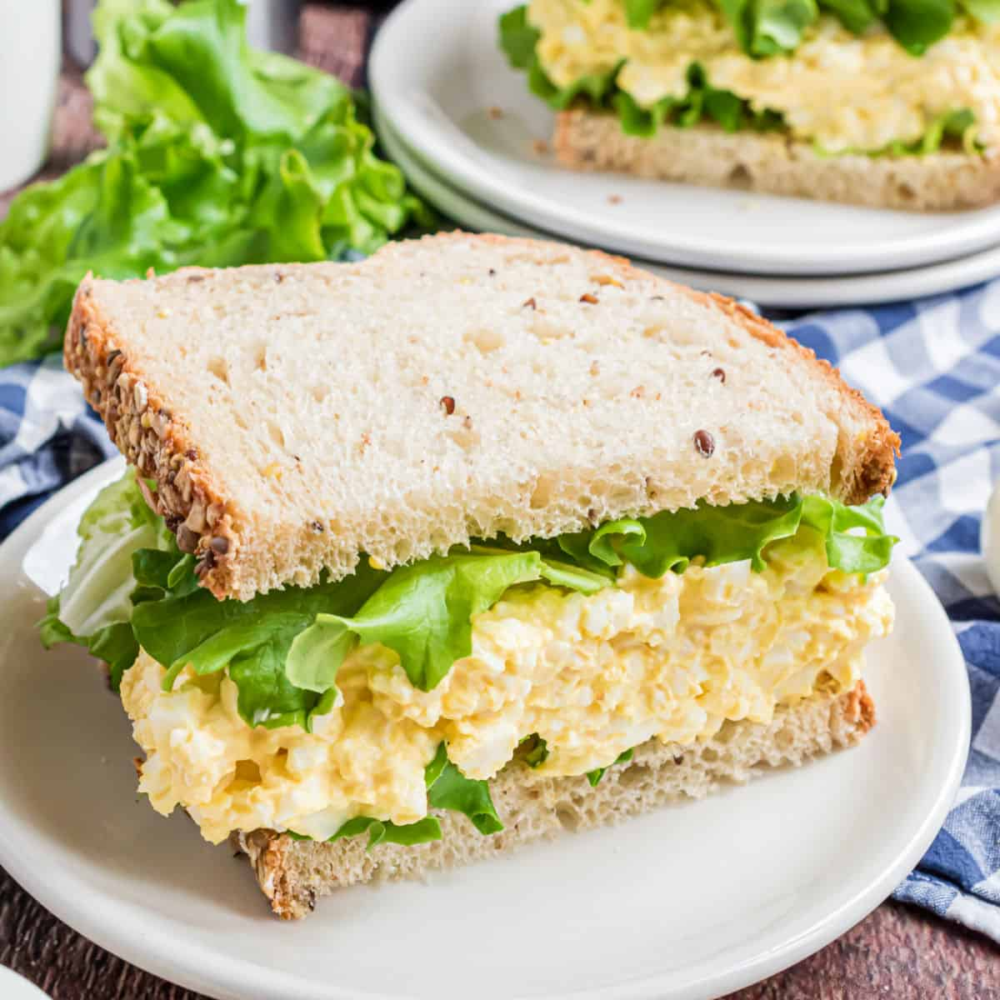

Egg Salad

This egg salad tastes wonderful in a sandwich and will definitely be devoured! It's really good on rye.
The Best Egg Salad Recipe is an easy favorite! Nothing is more picnic perfect than hard boiled eggs mixed with mayo and a pinch of mustard and of course crunchy with celery and green onions!
Whether you make an egg salad sandwich or a healthy egg salad using lettuce or low carb wraps, nothing says ‘all American’ like and egg salad!
Ingredients
- 8 eggs
- ½ cup mayonnaise
- ¼ cup chopped green onion
- 1 teaspoon prepared yellow mustard
- ¼ teaspoon paprika
- salt and pepper to taste
Steps
-
Place eggs in a saucepan and cover with cold water. Bring water to a boil and immediately remove from heat. Cover and let eggs stand in hot water for 10 to 12 minutes. Remove from hot water, cool, peel, and chop.
-
Place chopped eggs in a bowl; stir in mayonnaise, green onion, and mustard. Season with paprika, salt, and pepper. Stir and serve on your favorite bread or crackers.
return to main page